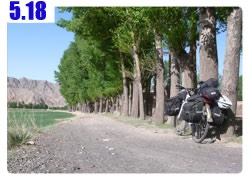

昨天比較晚落腳，寫完遊記就已經晚上12點，累得不支睡去。
照片則等到隔天睡醒的早上才開始整理，如果你有興趣知道的話，平均整理出一篇遊記所需的時間大概是兩～三個小時。
所以八點半才從旅館出發，武威對我來說就只是一個住一晚上的匆匆一瞥而已。
九點整在快要離開武威的地方吃早餐，點了八寶粥和兩根好吃的油條。
八寶粥不甜，但是糖可以自己隨意加，所以很好吃，油條則很厚實，吃起來不會很空虛。

今天和昨天剛好相反，昨天是逆風很機車，太陽很溫和。
今天太陽超大，一大早就飆到30度，中午的時候還一度到37度的高溫，而風卻變成微微的順風，慢慢推著我前進。

不知道為什麼今天有點沒勁，可能因為武威到張掖這段路，都是緩上坡的緣故吧。
路看起來都是平的，可是騎起來卻相當費勁，就會有一種『怎麼連平路都騎不快』的錯覺。
加上太陽很大，所以中午可以躲太陽吃午餐，真是很令人開心的事情。
餐廳的院子一共養了13隻雞，其中有2隻是白的，因為等我的炒麵上桌很無聊，所以就數雞打發時間。
午餐吃炒麵和雞蛋湯，五塊錢就搞定，湯是特別為我煮的，這邊的人都只喝麵湯(就是煮麵水)。

看著艷陽高照，出發前看旅館的電視報新聞，今天溫度在35度左右，空氣濕度只有10%，這應該是空氣很乾很乾的意思吧。
吃完飯就接著吃冰棒，這是抵抗酷暑的好方法，冰棒吃了這麼久，開始有點專精，
有些冰棒真是超難吃的，尤其是雪糕類的東西，吃起來像是發泡劑，很噁心。
所以我都吃冰棒系列的，再怎麼說也是糖水結成冰，味道不會差到哪裡去。
早上到吃飯這一段，風景很悶，吃飽飯之後，風景還是很悶。
心裡想說今天怎麼那麼無聊，什麼事情都沒發生，那遊記該怎麼寫咧？
就只是傻傻的騎車，連遮陽帽被風吹走這種雞毛蒜皮的事都沒有，未免太平淡無聊了一些。

小小的鐵路，有平交道但是沒有柵欄，可是會有載貨的火車經過，為了怕撞到通過的車子，所以火車都會鳴著警笛慢速通過。

這是半路經過永昌這個比較大的城市拍的照片，是張騫和他的外國朋友嗎？

因為氣溫到下午兩三點是最熱的時候，熱到連路上的柏油都融化了。
有一輛小卡車載著兩個工人，沿路灑一些細碎的小石子在融化的柏油路上，
讓經過的車子將小碎石壓進融化的柏油當中，應該是為了避免柏油黏在輪胎上的緣故。

武威往張掖是240公里，打算分兩天，一天120公里這樣騎，
騎到今天的下午五點半，都是一整個很無聊的一天，而且再騎個十公里左右就可以收工找地方睡覺了。
就在快要收工的時候，我迷路了~_~
312國道騎著騎著變成維修中的道路，旁邊有一條完好如初的路，有個告示牌說道路維修中，請繞道行駛。
我才不想繞道行駛咧，我今天都快要收工了，問一下工人說施工中的路可以走嗎？
工人說沒問題，只是要小心騎就是了。

所以我就自以為省下繞路的麻煩，騎上我以為是312國道的路。
而事實上這條維修的路，是個Z59還是什麼鬼的小路，剛剛那條我以為是繞路的才是312國道。
等我發現這個事實的時候，我已經騎完六公里的施工地帶，很不願意掉頭重新騎一次爛路回去。
所以就繼續往前騎，希望這條小路在前面還是可以讓我接回312國道，拜託拜託～

從迷路之後，就變成好風景，小路真是有小路的好處，景色往往都比國道好上很多。
而平淡的一天，也從遮陽帽被大風吹到水道裡，然後急速的被水沖走開始，有了一點新的漣漪。
心疼我的遮陽帽，雖然它是便宜的五塊錢，但是擋西曬的太陽，沒有它還真不知道該怎麼辦？
也許等到下一個大城市之後再找看看有沒有同樣的東西，順便也買個可以把臉包起來的圍巾好了。
把240公里拆成兩半來騎當然是沒有問題，只要那麼剛好在120公里的時候會出現地方讓我住店就好了。
因為現在處於迷路狀態，而路旁的景緻又很漂亮，若是騎到快八點還沒有出現人煙的話，那今天就搭帳篷睡在這邊吧。
迷路之後看到一些奇怪的東西，長約30公尺寬約5公尺的泥土圍牆，上頭用草蓆覆蓋或是張開取得日照，
左右兩邊都留一個小門讓人進出，我覺得這個應該也許有可能是羊咩咩他們睡覺的地方吧~_~太難猜了
下午五點過後，氣溫才慢慢的緩和下來，白天的時候，即使我的雙手戴手套、雙腳穿長褲，
依然被烈日灼燒得熱騰騰，可以聞到自己燒焦的味道飄出來～
騎了一段路之後，漸漸的出現一些土黃色的房子，看起來像是龐貝城遺跡那樣的荒蕪，可裡面確實是有住人的。
問了這邊的居民，要再往前騎多遠才會有可以吃飯和住宿的地方？
他們說前面那個山腳下，有一個紅山窯，那邊可以吃住。
紅山窯不是名字而已，這邊真的有很多很可愛的窯，不知道都拿來製作什麼樣的器具就是了。
七點半的時候又重新回到有招牌看板的地方，是個很小的鎮，氣氛卻很熱鬧。
由於現在的時區是+7，也就是我以為的晚上八點，其實才晚上七點而已，所以天空才會還那麼亮。
有點猶豫要不要把手錶的時間調慢一個小時，因為這樣子就不能享受額外的日光時間了，等再騎一陣子再說吧。
在這邊找到一間新開張的餐廳，地上的鞭炮屑都還沒掃掉，
除了賣吃的之外，還兼做住宿的生意，因為是新開張的，所以東西都很新，餐廳也很漂亮。

價錢則維持十塊錢的低價位，省下來的住宿費，我就拿來多吃幾樣好菜，也讓老闆們多一點收入。
晚餐點了蔥花炒蛋、蒜泥滷豬肉，點餐就會附一碗白麵，沒有任何調味料和湯，就是煮好的白麵條。
像是吃飯配菜那樣，只是改成吃麵配菜，因為口很渴就請老闆冰一瓶汽水和一瓶果汁。

這邊不只點菜是現做的，連菜都是現買的。
等我點了蔥花炒蛋之後，老闆就立刻去街上市場買了幾把蔥和一紙盒的蛋回來，實在是太方便了！
吃飯時問到個好消息，明天從這個意外來訪的紅山窯，是可以接回312國道的。
今天就偷懶一點不洗澡，等明天到張掖這個又是綠洲的大城市再來好好的梳洗一番吧。
繼續閱讀：5.19 堅忍的小花
中國-人民幣－ 1：4.3 台幣
5.18
總計：43.8元
早餐八寶粥、油條兩根1.8元、冰棒十隻5元、午餐炒麵3.5元、雞蛋湯1.5元、網吧一小時2元、晚餐蔥花炒蛋6元、滷豬肉9元、水蜜桃汁2.5元、百事可樂2.5元、住店10元